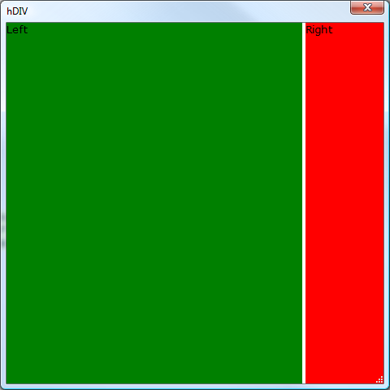

HtmlHost Example 3: Horizontal Sizer
Like the Vertical Sizer, a5:target, a5:target_elem and a5:target_adjust must be defined. In addition to these, it is important to note that in the enclosing DIV style of "height:100%; flow:horizontal;", the flow:horizontal; portion causes the enclosed divs to flow left to right instead of top to bottom as they normally would.dim html as c = <<%html%
<html>
<head>
<style>
<!--
.hsizer {
background-color:ThreeDHighlight;
behavior:clickable;
cursor:w-resize;
width:4px;
height:100%%;
}
-->
</style>
</head>
<body id="body">
<div style="height:100%;flow:horizontal;">
<div id="left" style="width:100%%;min-height:1in;height:100%%;background-color:green;" >Left</div>
<div class="hsizer" a5:target="hsizer" id="hsizer" a5:target_elem="right" a5:target_adjust="-" ></div>
<div id="right" style="width:1in;height:100%%;background-color:red; " >Right</div>
</div>
</body>
</html>
%html%
ui_dlg_box("hDIV",<<%dlg%
{size=width=5in;height=5in}
{stretch=width,height}
{htmlhost=html};
%dlg%)